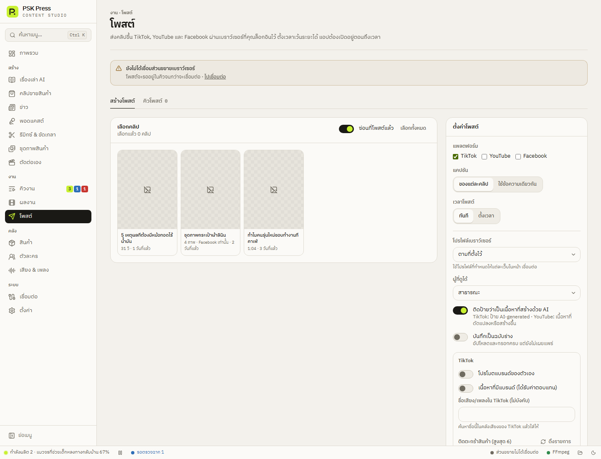

งาน
โพสต์
ส่งคลิปขึ้น TikTok, YouTube และ Facebook ผ่านเบราว์เซอร์ที่คุณล็อกอินไว้ — ทันที ตั้งเวลา หรือเตรียมไว้ให้ตรวจแล้วกดเอง
การโพสต์ทำผ่านส่วนขยายใน Chrome โดยเปิดหน้าอัปโหลดจริงของแต่ละแพลตฟอร์ม กรอกให้ครบ แล้วกดเผยแพร่ หรือรอให้คุณกดเอง ต้อง เชื่อมส่วนขยาย และล็อกอินบัญชีไว้ก่อน ถ้ายังไม่เชื่อม โพสต์จะรอในคิวจนกว่าจะเชื่อมต่อ


สร้างโพสต์
- เลือกคลิป — ติ๊กคลิปที่จะโพสต์ สวิตช์ ซ่อนที่โพสต์แล้ว เปิดไว้เป็นค่าเริ่มต้น มีปุ่ม เลือกทั้งหมด / ล้าง
- แพลตฟอร์ม — TikTok / YouTube / Facebook เลือกได้หลายที่ ชุดภาพโพสต์ได้เฉพาะ Facebook
- แคปชัน — ของแต่ละคลิป (ที่ AI เขียนให้แต่ละงาน) หรือ ใช้ข้อความเดียวกัน
- เวลาโพสต์ — ทันที หรือ ตั้งเวลา (เลือก เริ่ม และ เว้นระยะ ระหว่างโพสต์ ค่าเริ่มต้น 60 นาที)
- ตั้ง ตัวเลือกโพสต์
- กดเผยแพร่ให้อัตโนมัติ — ปิด = เตรียมไฟล์และแคปชันไว้ให้คุณกดเอง
- กด โพสต์ N รายการ หรือ ตั้งเวลาโพสต์ N รายการ หน้ายืนยันจะสรุปทุกแพลตฟอร์ม บัญชี คลิป การมองเห็น และเวลา แล้วกด โพสต์เลย หรือ เตรียมโพสต์
แนะนำ: ตรวจก่อนเผยแพร่
ช่วงแรกให้ปิด “กดเผยแพร่ให้อัตโนมัติ” แอปจะเปิดหน้าอัปโหลดใน Chrome กรอกทุกอย่างให้ แล้วรอคุณดูและกดเผยแพร่เอง ในคิวจะขึ้นสถานะ เตรียมไว้ให้ตรวจ เมื่อมั่นใจแล้วค่อยเปิดโหมดอัตโนมัติ
ตัวเลือกโพสต์
ทั่วไป
- โปรไฟล์เบราว์เซอร์ — แสดงเมื่อมีหลายโปรไฟล์ “ตามที่ตั้งไว้” = ใช้โปรไฟล์ที่กำหนดให้แต่ละเว็บใน หน้าเชื่อมต่อ
- ผู้ที่ดูได้ — สาธารณะ (ค่าเริ่มต้น) / ไม่เป็นสาธารณะ (YouTube) · ส่วนตัวที่อื่น / เฉพาะเพื่อน (TikTok) · ส่วนตัวที่อื่น / ส่วนตัว
- ติดป้ายว่าเป็นเนื้อหาที่สร้างด้วย AI — เปิดไว้เป็นค่าเริ่มต้น TikTok: ป้าย AI-generated · YouTube: เนื้อหาที่ดัดแปลงหรือสร้างขึ้น
- บันทึกเป็นฉบับร่าง — อัปโหลดและกรอกครบ แต่ยังไม่เผยแพร่
- ตั้งเวลาไว้บนแพลตฟอร์มเลย — เมื่อเลือกตั้งเวลา ส่งขึ้นไปตั้งเวลาบนแพลตฟอร์มทันที แอปไม่ต้องเปิดตอนถึงเวลา (TikTok ตั้งล่วงหน้าได้ไม่เกิน 10 วัน)
TikTok
- โปรโมตแบรนด์ของตัวเอง / เนื้อหาที่มีแบรนด์ (ได้รับค่าตอบแทน) — การเปิดเผยตามกฎ TikTok
- ชื่อเสียง/เพลงใน TikTok (ไม่บังคับ) — แอปค้นชื่อนี้ในคลังเสียงของ TikTok แล้วใส่ให้
- ติดตะกร้าสินค้า (สูงสุด 6) — กด ดึงรายการ เพื่อโหลดสินค้าในโชว์เคส TikTok Shop ของบัญชี แล้วเลือกสินค้า
- ชื่อตะกร้า (ไม่บังคับ) — ไม่เกิน 30 ตัวอักษร ว่าง = ใช้ชื่อสินค้า
YouTube
- ชื่อวิดีโอ (ว่าง = ใช้ชื่องาน), ช่อง, เพลย์ลิสต์ — กด ดึงรายการ เพื่อโหลดจากบัญชี
- สร้างมาเพื่อเด็ก, มีการโปรโมตแบบชำระเงิน
- เพจ — โปรไฟล์ส่วนตัว หรือเลือกเพจ
คิวโพสต์
แท็บ คิวโพสต์ แสดงทุกโพสต์และสถานะ:
- รอ
- กำลังโพสต์
- สำเร็จ
- เตรียมไว้ให้ตรวจ — เปิดหน้าเว็บไว้ให้คุณกดเผยแพร่เอง
- ล้มเหลว — พร้อมเหตุผล
- ยกเลิก
- ยกเลิก — โพสต์ที่ยังรออยู่
- ลองใหม่ — โพสต์ที่ล้มเหลวหรือยกเลิก
- ล้างรายการที่จบแล้ว — ลบรายการออกจากคิว โพสต์บนแพลตฟอร์มไม่ถูกลบ
ข้อควรรู้
- การโพสต์ที่ตั้งเวลาด้วยแอป แอปต้องเปิดอยู่ตอนถึงเวลา
- การโพสต์อัตโนมัติคลิกหน้าเว็บจริงแทนคุณ อาจหยุดทำงานเมื่อแพลตฟอร์มเปลี่ยนหน้าตา ถ้าล้มเหลว ให้ดูเหตุผลในคิวแล้วโพสต์เองจากแท็บที่เปิดไว้
- ตั้งโพสต์อัตโนมัติตั้งแต่ตอนสร้างงานได้ ในส่วน แคปชันและโพสต์อัตโนมัติ
- แอปไม่หมุนบัญชี ไม่ปลอม IP และไม่จำลองการแตะแบบมนุษย์ ใช้บัญชีของคุณตามปกติเท่านั้น